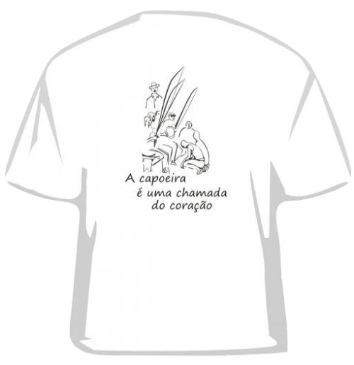
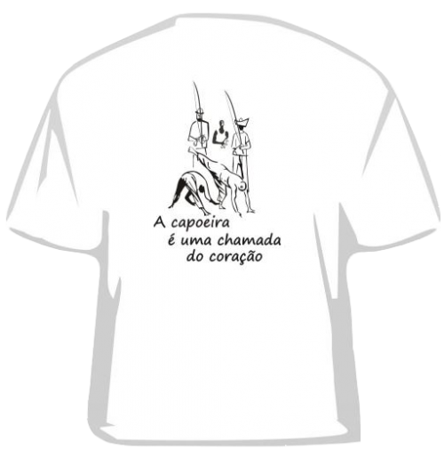
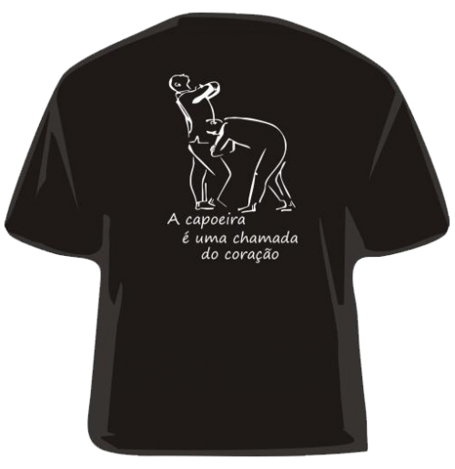
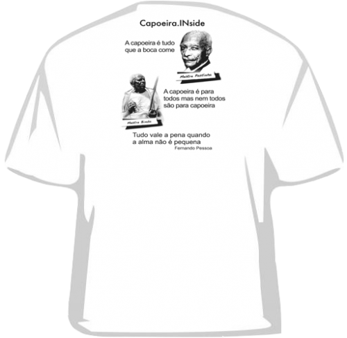
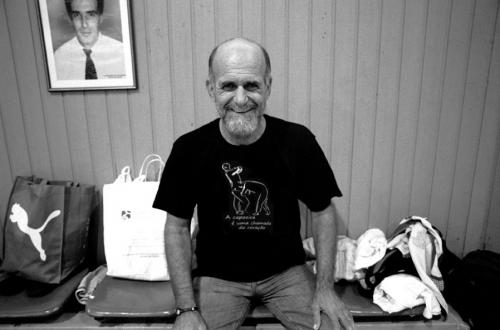
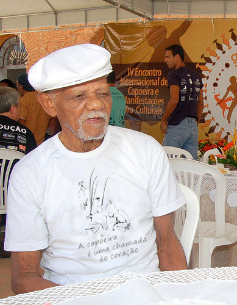
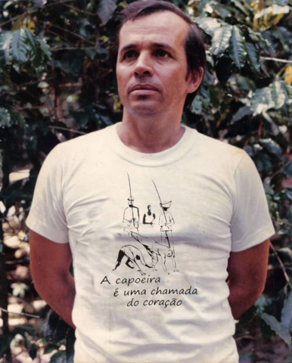
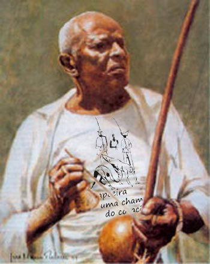

Футболки Capoeira.inside
Уважаемые коллеги, посетители, сочувствующие и просто случайно зашедшие. С радостной вестью пришел я к вас. С этого самого дня, вы можете помочь инсайду и получить взамен распрекрасную футболочку на лето. Все деньги собранные от продажи футболок пойду на развитие проекта. Надеюсь, что вам понравятся те нововведения, которые мы готовим.
Итак, сами футболки:
Дизайн номер один.

Дизайн номер два.

Дизайн номер три.

Спина на всех футболках одинаковая:

Стоимость любой футболки 500 рублей. Размеры разные. Чтобы заказать футболочку, вам достаточно написать письмо на info@capoeira.in, в котором в свободной форме указать необходимый дизайн, размер и город, где вы готовы получить футболку. Дальше будем разбираться как и где вы её получите.
Вот несколько отзывов от счастливых обладателей футболок.
После покупки футболки от Capoeira.Inside скорость набора новых учеников возросла вдвое, а батизада проходит легко и незаметно. Очень рекомендую! P. S. У меня стали расти волосы! P. P. S. Прикиньте, футболка на португальском «camisa», вот совпадение! — Mestre Camisa
В моём возрасте как никогда важна координация. Футболка от capoeira.in выравнивает координацию получше, чем волшебные браслеты, которые мне втюхали на одном сайте! — Mestre Joao Pequeno.
Я надеваю эту футболку только по особым дням, чтобы все вокруг видели, что капоэйра всё ещё инсайд. А ещё, в этой футболке я снова могу сделать volta por sima. А моя мажинга стала гладкой и шелковистой. — Mestre Suassuna.
Я подарил капоэйру белым, а на днях белые подарили мне футболку! Был бы жив, обязательно завёл бы блог на инсайдике. С гордостью смотрю на этот сайт сверху. — Mestre Bimba